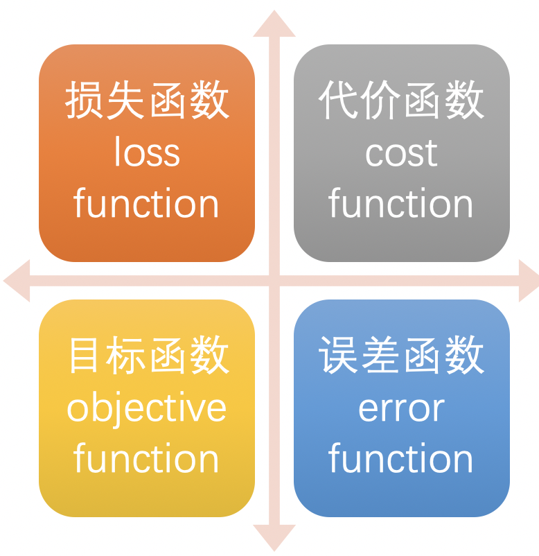
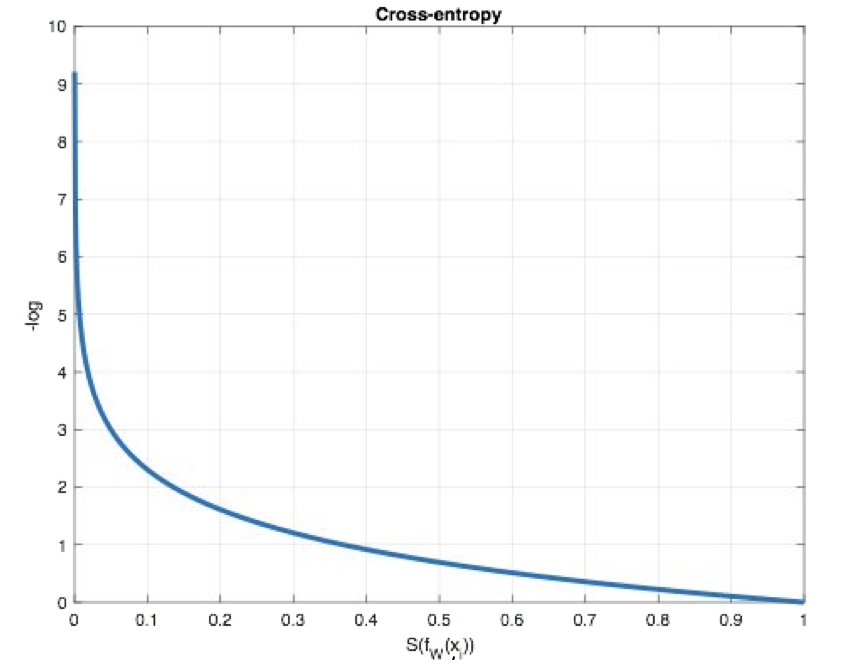
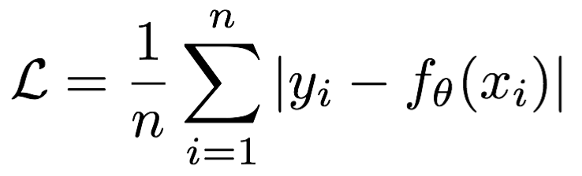
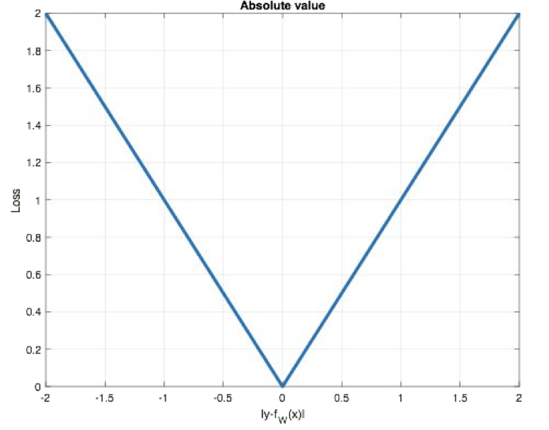
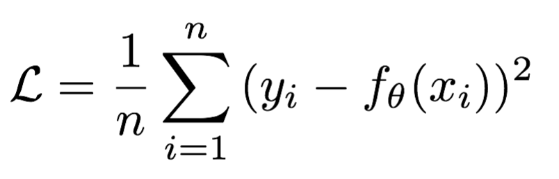
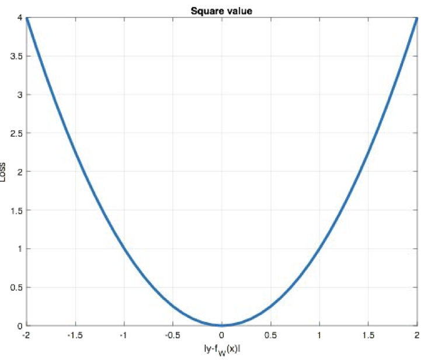
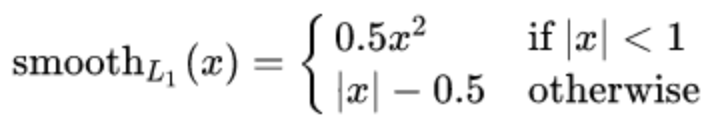
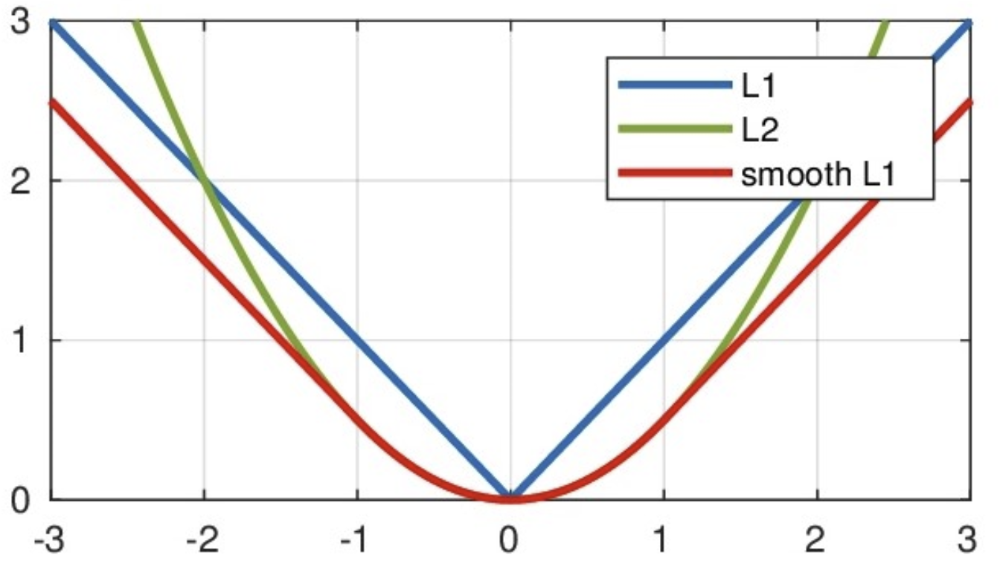

3 神经网络损失函数¶
- 学习目标
- 知道分类任务的损失函数
- 知道回归任务的损失函数

在深度学习中, 损失函数是用来衡量模型参数的质量的函数, 衡量的方式是比较网络输出和真实输出的差异，损失函数在不同的文献中名称是不一样的，主要有以下几种命名方式：

1 分类任务¶
在深度学习的分类任务中使用最多的是交叉熵损失函数，所以在这里我们着重介绍这种损失函数。
1.1 多分类任务¶
在多分类任务通常使用softmax将logits转换为概率的形式，所以多分类的交叉熵损失也叫做softmax损失，它的计算方法是：

其中，y是样本x属于某一个类别的真实概率，而f(x)是样本属于某一类别的预测分数，S是softmax函数，L用来衡量p,q之间差异性的损失结果。
例子：

上图中的交叉熵损失为：

从概率角度理解，我们的目的是最小化正确类别所对应的预测概率的对数的负值，如下图所示：

在pytorch中使用nn.CrossEntropyLoss()实现或者nn.NLLLoss()，如下所示：
def dm01_test_CrossEntropyLoss():
# 1 交叉熵损失nn.CrossEntropyLoss() 与LogSoftmax()与nn.NLLLoss()相结合进行交叉熵损失计算
# - 对预测值先进行softmax，然后再log；最后再调用nn.NLLLoss()
# - 对于nn.CrossEntropyLoss来说，损失函数内部自带softmax，所以不需要人为额外在上一步执行softmax操作
# 设置真实值和预测值
# 目标值（标签）编码分类：（label encode标签编码， one-hotencode独热编码）
# y_true = torch.tensor([[0, 1, 0], [0, 0, 1]], dtype=torch.long)
y_true = torch.tensor([1, 2], dtype=torch.long)
y_pred = torch.tensor([[1.04, 1.95, 1.01], [1.1, 1.8, 1.1]], dtype=torch.float32)
print('y_true--->', y_true, y_true.shape)
print('y_pred--->', y_pred, y_pred.shape)
# 实例化交叉熵损失
loss1 = nn.CrossEntropyLoss() # 默认求平均损失
# loss1 = nn.CrossEntropyLoss(reduction='sum')
# 计算损失结果
my_loss1 = loss1(y_pred, y_true).numpy()
print('nn.CrossEntropyLoss(): my_loss1--->', my_loss1)
# 2 nn.NLLLoss()
# 实例化交叉熵损失：仅仅实现负号的功能
loss2 = nn.NLLLoss()
# loss2 = nn.NLLLoss(reduction='sum')
# 计算损失结果
my_loss2 = loss2(F.log_softmax(y_pred, dim=-1), y_true).numpy()
print('nn.NLLLoss(): my_loss2--->', my_loss2)
# 3 手工验算
print('-' * 50 )
print(torch.softmax(y_pred, dim=-1))
# tensor([[0.2245, 0.5577, 0.2178],
# [0.2491, 0.5017, 0.2491]])
# 手工验证1 : log以e为底 不是log以10为底
# -( (0*log0.2245 + 1*log0.5577 + 0*log0.2178) + (0*log0.2491 + 0*log0.5017 + 1*log0.2491) )
a = - ((0 * F.math.log(0.2245) + 1 * F.math.log(0.5577) + 0 * F.math.log(0.2178)) + \
(0 * F.math.log(0.2491) + 0 * F.math.log(0.5017) + 1 * F.math.log(0.2491)))
print('\n手工验证1 损失a--->', a, 'log以e为底') # 0.4620
print('\n手工验证1 平均损失a--->', a/2, 'log以e为底') # 0.4620
结果为：
y_true---> tensor([1, 2]) torch.Size([2])
y_pred---> tensor([[1.0400, 1.9500, 1.0100],
[1.1000, 1.8000, 1.1000]]) torch.Size([2, 3])
nn.CrossEntropyLoss(): my_loss1---> 0.98685086
nn.NLLLoss(): my_loss2---> 0.98685086
--------------------------------------------------
tensor([[0.2245, 0.5577, 0.2178],
[0.2491, 0.5017, 0.2491]])
手工验证1 损失a---> 1.9738349523006313 log以e为底
手工验证1 平均损失a/2---> 0.9869174761503157 log以e为底
损失函数 End
1.2 二分类任务¶
在处理二分类任务时，我们不在使用softmax激活函数，而是使用sigmoid激活函数，那损失函数也相应的进行调整，使用二分类的交叉熵损失函数：

其中，y是样本x属于某一个类别的真实概率，而y^是样本属于某一类别的预测概率，L用来衡量真实值与预测值之间差异性的损失结果。
在pytorch中实现时使用nn.BCELoss() 或者 nn.BCEWithLogitsLoss()，如下所示演示nn.BCELoss()：
def dm02_test_BCELoss():
# 1 设置真实值和预测值
y_pred = torch.tensor([1.6901, -0.5459, -0.2469], requires_grad=True)
y_true = torch.tensor([0, 1, 0], dtype=torch.float32)
# 2 实例化二分类交叉熵损失
criterion = nn.BCELoss()
# 3 因是一个概率分布，在数据输入损失函数之前呢，需要经过一下Sigmoid来把输出值变成0~1之间
y_sigmoide_pred = torch.sigmoid(y_pred) # 注意 使用sigmoid, 不是softmax
print('y_sigmoide_pred--->', y_sigmoide_pred, y_sigmoide_pred.shape)
print('loss_input target--->', y_sigmoide_pred.shape, y_true.shape)
# 4 计算损失
my_loss = criterion(y_sigmoide_pred, y_true)
print('my_loss--->', my_loss)
结果为：
y_sigmoide_pred---> tensor([0.8442, 0.3668, 0.4386], grad_fn=<SigmoidBackward>) torch.Size([3])
loss_input target---> torch.Size([3]) torch.Size([3])
my_loss---> tensor(1.1465, grad_fn=<BinaryCrossEntropyBackward>)
如下所示，演示nn.BCEWithLogitsLoss()
def dm03_test_BCEWithLogitsLoss():
# 1 设置真实值和预测值
y_pred = torch.tensor([1.6901, -0.5459, -0.2469], requires_grad=True)
y_true = torch.tensor([0, 1, 0], dtype=torch.float32)
# 2 实例化二分类交叉熵损失
criterion = nn.BCEWithLogitsLoss()
# 3 计算损失 不需要再对y_pred加入Sigmoid函数
my_loss = criterion(y_pred, y_true)
print('my_loss--->', my_loss)
# 4 手工验证
# loss = - ylog(y^) - (1-y)log(1-y^)
a1 = -0*F.math.log(0.8442) -(1-0)*F.math.log(1-0.8442) \
-1*F.math.log(0.3668) -(1-1)*F.math.log(1-0.3668) \
-0*F.math.log(0.4386) -(1-0)*F.math.log(1-0.4386)
print('a1--->', a1)
print('三个样本，a1/3--->', a1 / 3)
结果为：
my_loss---> tensor(1.1465, grad_fn=<BinaryCrossEntropyWithLogitsBackward>)
a1---> 3.4394422991996714
三个样本，a1/3---> 1.1464807663998904
损失函数 End
2 回归任务¶
回归任务中常用的损失函数有以下几种：
2.1 MAE损失¶
Mean absolute loss(MAE)也被称为L1 Loss，是以绝对误差作为距离：

曲线如下图所示：

特点是：由于L1 loss具有稀疏性，为了惩罚较大的值，因此常常将其作为正则项添加到其他loss中作为约束。L1 loss的最大问题是梯度在零点不平滑，导致会跳过极小值。
在pytorch中使用nn.L1Loss()实现，如下所示：
# APi功能 计算算inputs与target之差的绝对值
# 主要参数: reduction 计算模式可为none、sum、mean
# none: 逐个元素计算
# sum: 所有元素求和, 返回标量
# mane: 加权平均, 返回标量
def dm05_test_maeloss():
# 1 设置真实值和预测值
y_pred = torch.tensor([1.0, 1.0, 1.9], requires_grad=True)
y_true = torch.tensor([2.0, 2.0, 2.0], dtype=torch.float32)
# 2 实例MAE损失对象
loss = nn.L1Loss()
# 3 计算损失
my_loss = loss(y_pred, y_true)
my_loss.backward()
print('myloss--->', my_loss)
结果为：
myloss---> tensor(0.7000, grad_fn=<L1LossBackward>)
2.2 MSE损失¶
Mean Squared Loss/ Quadratic Loss(MSE loss)也被称为L2 loss，或欧氏距离，它以误差的平方和的均值作为距离：

曲线如下图所示：

特点是：L2 loss也常常作为正则项。当预测值与目标值相差很大时, 梯度容易爆炸。
在pytorch中通过nn.MSELoss()实现：
def dm06_test_mseloss():
# 1 设置真实值和预测值
y_pred = torch.tensor([1.0, 1.0, 1.9], requires_grad=True)
y_true = torch.tensor([2.0, 2.0, 2.0], dtype=torch.float32)
# 2 实例MAE损失对象
loss = nn.MSELoss()
# 3 计算损失
my_loss = loss(y_pred, y_true)
my_loss.backward()
print('myloss--->', my_loss)
结果为：
myloss---> tensor(0.6700, grad_fn=<MseLossBackward>)
2.3 smooth L1 损失¶
Smooth L1损失函数如下式所示：

其中：𝑥=f(x)−y 为真实值和预测值的差值。

从上图中可以看出，该函数实际上就是一个分段函数，在[-1,1]之间实际上就是L2损失，这样解决了L1的不光滑问题，在[-1,1]区间外，实际上就是L1损失，这样就解决了离群点梯度爆炸的问题。通常在目标检测中使用该损失函数。
在pytorch中使用nn.SmoothL1Loss()计算该损失，如下所示：
def dm07_test_smoothL1():
# 1 设置真实值和预测值
y_true = torch.tensor([[0], [1]])
y_pred = torch.tensor ([[0.6], [0.4]], requires_grad=True)
# 2 实例smmothL1损失对象
loss = nn.SmoothL1Loss()
# 3 计算损失
my_loss = loss(y_pred, y_true)
# my_loss.backward()
print('myloss--->', my_loss)
# 手工验证：
# 总损失：( 0.5*(0.6-0)^2 + 0.5*(0.4-1)^2 ) = (0.18+0.18) = 0.36
mysquare = torch.square( torch.tensor([0.6, 0.6]) ) *0.5
my_loss2 = torch.mean(mysquare)
print('2个样本，手工计算损失my_loss2--->', my_loss2.numpy())
结果：
2个样本，手工计算损失my_loss2---> 0.18
3 小结¶
- 知道分类任务的损失函数
多分类的交叉熵损失函数和二分类的交叉熵损失函数
- 知道回归任务的损失函数
MAE，MSE，smooth L1损失函数